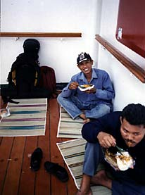
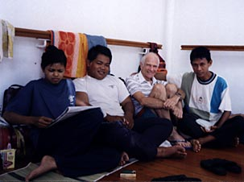
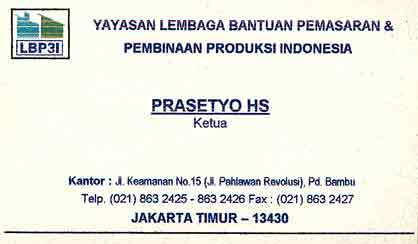
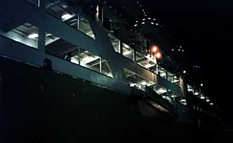
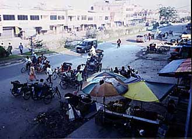
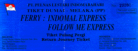

sailed 4 - 7 Nov 99 web version, with
|
|
| Prior Trav-E-Log: The Good, the Ugly... | Pelni is the only major Indonesian Shipping Line |
(Note:) This describes travel in S.E.Asia between Oct 16, 1999 and Jan 22, 2000. The four-day, three-night "cruise" to Dumai, Sumatra on the Pelni ship Bukit Siguntang in kelas ekonomi was quite an education. Backpackers often must travel "kelas ekonomi" because the tickets for upper classes of travel sell out early. Arriving a few hours after passengers were allowed on board meant that every available deck-class bunk was occupied. Searching deck after deck, all I could see was a mass of humanity. My guess is that the ship, designed for 2003 passengers was carrying at least 2500. The overflow crowd was destined to seek refuge outside, so I made my way towards the front of the ship along an outside rail, and claimed territory immediately behind a massive bulkhead. My reasoning was that if it rained during the next three days, the motion of the ship might shield me from most of the elements. I quickly made friends with others looking for a place to sit, inviting them to join me. After all, I wanted to meet and talk to new people, and being surrounded with friends is the epitome of security, when there is no place for one's belongings. It would be absurd to carry a backpack while in line to pick up meals, or go to the toilet, but impossible to use the shower. Late the first night, it seemed my reasoning was going to pay off, as a light rain chased most of the squatters on the outside decks to the hallways inside. We remained relatively dry -- for awhile.
Then, about 3 in the morning, it really started pouring, and the water started flooding the entire deck. By now, every available inch of floor space inside the ship was occupied with bodies trying to catch up on sleep. I started writing the draft of more Trav-E-Logs in the doorway of a narrow passageway marked "CREW ONLY". So each time a crew member came up to the glass door, I had to move out of the way. Eventually I started opening the door for each crew member, some dressed in tee-shirts and Levi's, others in medical scrubs, some with very impressive military type uniforms, emblazoned with the steamship name, "Pelni". Finally, a gentleman in an orange jumpsuit came by, and stopped when I opened the door for him. He ordered me to a solid wood table in crew quarters, to continue my letter, saying one should not write letters on the floor. The gorgeous air-conditioned and carpeted meeting room had big comfortable chairs, maps and detailed drawings of the ship hanging from the bulkheads, and large port holes for viewing. Turning the overhead lights on, he sat down across the table and started chatting with me. His name is Joseph Abraham, a Christian, and has been a sailor for 30 years. He has toured Europe, but not yet the USA. I finally gather enough courage to ask him his job on the ship. He laughs, and says "Captain".
On the second day of the cruise, the ship pulls into the port serving Jakarta, and the ship's population decreases by 20% or so. My new friends Hery Yanto from the Island of Madura, Arsyad from Sulawesi, and I, take that opportunity to relocate to the lowest deck of the ship. Not because it is noisy and "undesirable", but because it is not nearly as crowded. We choose an area in the corner, rather than in the open, for the added security. We also pay a small fee to use a vinyl coated, 3-inch thick mattress for the bunk-like platform. I'm able to grab a few hours of sleep on the second night of the trip. The crew in charge of the movie theater allows me to play my fiddle there when not in use for showing films or sleeping. On the third day, I find a snack shop to supplement the horrible meals that are served prisoner style. A team of five researchers are going to a three country Coral Rehabilitation Conference in Kijang, and I encourage them to place the proceedings on the Internet. They say sure, - just fund the project. I suggest Micro Soft's Bill Gates as a more likely philanthropist, and suggest ways to get his attention. Over half of the passengers disembark in the port of Kijang, and the crew tells us our claimed territory is being closed - we must find another deck. No big deal, lots of places to chose from now.
Four days is enough time to place my unfortunate Surabaya experience behind me. The ship pulls into Dumai about 12:30 in the afternoon, just after the ferry leaves for Malaysia. I fight my way through the hordes of hawkers, and find a laid-back becak driver for a ride into town to buy round-trip passage on the Indomal Express to Melaka, and to do something about sleeping tonight. My old travel guide tells me nothing about Dumai, an oil port, with no attractions, and best avoided. After finding a 6 room hotel so new it didn't have a sign, I spend the rest of the day just walking from one end of town to the other, under the very hot sun. All foreigners are fair game for yelling "Hello Mista", and "Where you going?" and "Where you from?" and trying to sell something, or anything. The photo at right, taken from the balcony at the end of my hallway, shows the main street in front of the market area.
Even though the hotel room is new, it still has mosquitoes. Down to the market to buy fruit for the trip tomorrow, and a box of mosquito coils, as a netting solution has not worked. Bumped into a couple from Melaka I had met while strolling earlier, and enjoyed dinner with them. They complain about Indonesia being so crude and backwards, but I don't really understand what they mean. They speak Chinese, Malay, and English fluently. The hawkers can tell they are not Indonesian, but I can not. I'm about to get another education.
Bill